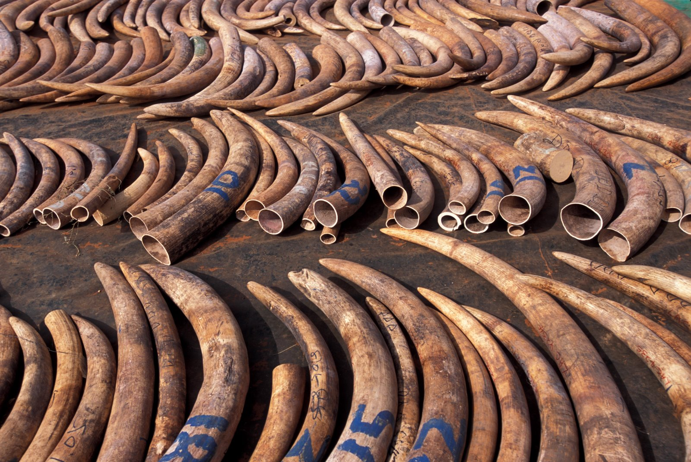
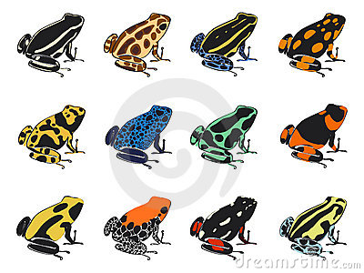

The idea of dinosaur saddles first came about in August of 1872 in the wild, wild west when three brothers: Cody Lalone, Brandon Martin, and Connor Wilkinson were tired of riding their dinosaurs bareback. They were tired of herding cattle in the extreme heat on such uncomfortable animals. The Stegosaurus was especially uncomfortable. As a result, dinosaur saddles became a thing. The first prototype came about in October of 1872. It was a mixture of cotton, bison hide, and pine. For over a century, our customers have supported us through thick and thin and brought us into what we are today. Currently our saddles consist of luxurious materials which only add to the experience of dinosaur riding. Our standard saddles consist of 100% pure Asian rhino hide and a saddle horn made from pure elephant tusk ivory. All of this comes with optional American bald eagle feather accents which can be custom dyed with vibrant, all natural poison dart frog derived dye upon the customer's request. The dye from more than 400 frogs is used to insure you get the exact shade you desire. We will work with the customer to make a style and fit that you will be guaranteed to love and adore.
 